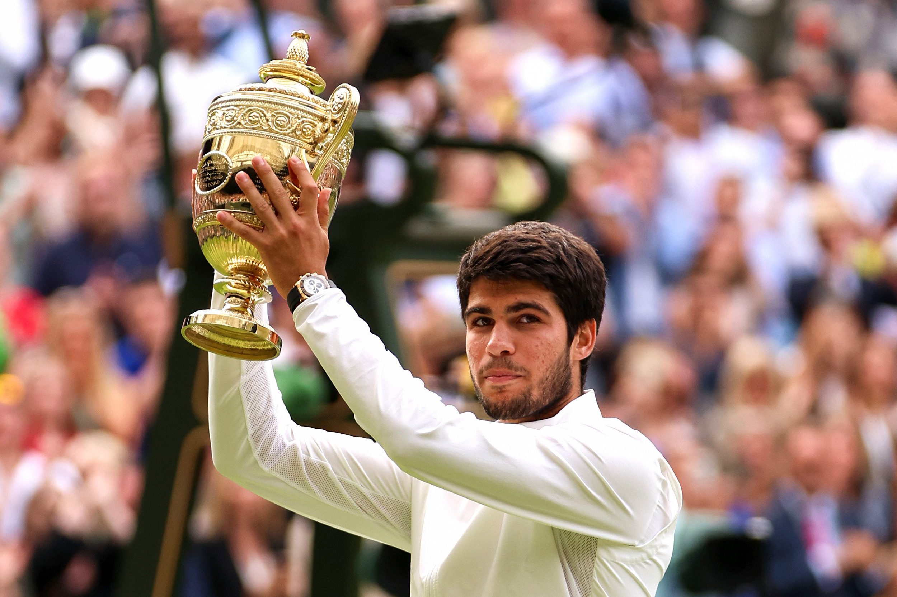

Carlos Alcaraz conquista el Abierto de Australia 2025
El joven tenista español vence a Djokovic en una épica final.

En una final intensa que duró más de 4 horas, Carlos Alcaraz venció a Novak Djokovic, consolidándose como uno de los mejores tenistas de su generación.